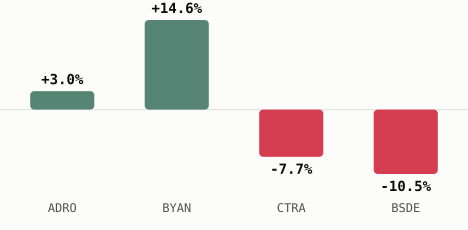

<!-- Sectors Macro Reaction - 13 Jul 2026, data as of 10 Jul 2026. All figures from sectors.app unless cited. -->
<div style="margin:0;padding:0;background:#f2ede4;">
<table role="presentation" width="100%" cellpadding="0" cellspacing="0" style="background:#f2ede4;padding:24px 0;">
<tr><td align="center">
<table role="presentation" width="600" cellpadding="0" cellspacing="0" style="width:600px;max-width:600px;background:#fdf7ee;border-radius:14px;overflow:hidden;font-family:-apple-system,Segoe UI,Roboto,Helvetica,Arial,sans-serif;color:#1c1c1c;">

  <!-- Header -->
  <tr><td style="padding:28px 32px 8px 32px;border-bottom:2px solid #1c1c1c;">
    <table role="presentation" width="100%"><tr>
      <td style="font-size:24px;font-weight:800;color:#1c1c1c;">Sectors Macro Reaction</td>
      <td align="right" width="110">
        
      </td>
    </tr></table>
    <div style="font-size:13px;color:#6b6b6b;padding-top:4px;">13 July 2026 &nbsp;|&nbsp; data as of 10 July 2026</div>
  </td></tr>

  <!-- Headline -->
  <tr><td style="padding:22px 32px 0 32px;">
    <div style="font-size:21px;font-weight:800;color:#1c1c1c;line-height:1.3;">A weaker rupiah splits coal miners from property developers</div>
    <p style="font-size:14px;line-height:1.55;color:#333;margin:8px 0 0 0;">
      The rupiah closed at IDR 18,128 per dollar this week on Middle East risk-off flows,
      and that single move plays out in opposite directions for a dollar-earning coal
      exporter and a rupiah-funded homebuilder.
    </p>
  </td></tr>

  <!-- The news -->
  <tr><td style="padding:22px 32px 0 32px;">
    <div style="font-size:17px;font-weight:800;color:#1c1c1c;">The news</div>
    <ul style="font-size:14px;line-height:1.6;color:#333;margin:8px 0 0 0;padding-left:18px;">
      <li><b>Rupiah</b> closed at <b>IDR 18,128 per dollar</b> on 9 Jul 2026, down 0.63% on the day, as escalating US-Iran tensions over the Strait of Hormuz drove safe-haven demand for the dollar (<a href="https://jakartaglobe.id/business/rupiah-plunges-to-rp-18128-as-usiran-tensions-escalate" style="color:#9E0142;text-decoration:none;">Jakarta Globe</a>, 9 Jul 2026).</li>
      <li>Minutes from the Fed's June meeting showed policymakers "largely divided" over further hikes this year, and that uncertainty kept US rates higher for longer and the dollar bid (Jakarta Globe, 9 Jul 2026).</li>
      <li>Domestic headwinds added to the pressure too: faster 2026 state budget spending and softening consumer confidence weighed on sentiment (Jakarta Globe, 9 Jul 2026).</li>
      <li>Separately, S&amp;P Dow Jones Indices placed Indonesia on a watch list for possible downgrade to frontier-market status at its 2027 review, citing stock-ownership transparency and disclosure concerns (<a href="https://www.thejakartapost.com/business/2026/07/08/sp-dji-flags-risk-of-frontier-market-downgrade-for-indonesia" style="color:#9E0142;text-decoration:none;">The Jakarta Post</a>, 8 Jul 2026).</li>
      <li>Bank Indonesia had already raised its policy rate 50 basis points to 5.25% in May, explicitly to defend the rupiah against Middle East-driven turmoil (<a href="https://www.bi.go.id/en/publikasi/ruang-media/news-release/Pages/sp_2810726.aspx" style="color:#9E0142;text-decoration:none;">Bank Indonesia</a>, 20 May 2026).</li>
    </ul>
  </td></tr>

  <!-- Winners and losers -->
  <tr><td style="padding:22px 32px 0 32px;">
    <div style="font-size:17px;font-weight:800;color:#1c1c1c;">Winners and losers</div>
    <p style="font-size:14px;line-height:1.55;color:#333;margin:8px 0 0 0;">
      Coal is priced and sold internationally in dollars, so a weaker rupiah turns every
      dollar of export revenue into more rupiah on the way home. Property developers sit
      on the other side of that trade: their sales and buyer financing are denominated in
      rupiah, but building materials and a share of servicing costs move with the dollar
      or with Bank Indonesia's own policy rate, and its higher-for-longer defense of the
      currency raises exactly those financing costs.
    </p>
    <p style="font-size:14px;line-height:1.55;color:#333;margin:10px 0 0 0;">
      The month to 10 Jul 2026 already shows the split. As the rupiah slid,
      <a href="https://sectors.app/idx/adro" style="color:#9E0142;font-weight:700;text-decoration:none;">$ADRO</a>
      (Alamtri Resources Indonesia) rose <b>3.0%</b> and
      <a href="https://sectors.app/idx/byan" style="color:#9E0142;font-weight:700;text-decoration:none;">$BYAN</a>
      (Bayan Resources) rose <b>14.6%</b>, while
      <a href="https://sectors.app/idx/bsde" style="color:#9E0142;font-weight:700;text-decoration:none;">$BSDE</a>
      (Bumi Serpong Damai) fell <b>10.5%</b> and
      <a href="https://sectors.app/idx/ctra" style="color:#9E0142;font-weight:700;text-decoration:none;">$CTRA</a>
      (Ciputra Development) fell <b>7.7%</b> (sectors.app).
    </p>
    <div style="padding:16px 0 4px 0;">
      
    </div>
    <p style="font-size:12px;font-style:italic;line-height:1.5;color:#6b6b6b;margin:6px 0 0 0;">
      The same rupiah slide moved coal miners and property developers in opposite directions over the month to 10 Jul 2026 (sectors.app).
    </p>
  </td></tr>

  <!-- Valuation & fundamentals context -->
  <tr><td style="padding:22px 32px 0 32px;">
    <div style="font-size:17px;font-weight:800;color:#1c1c1c;">Valuation &amp; fundamentals context</div>
    <table role="presentation" width="100%" cellpadding="0" cellspacing="0" style="margin-top:12px;font-size:13px;border-collapse:collapse;">
      <tr style="background:#fbe9d8;color:#1c1c1c;font-weight:700;">
        <td style="padding:8px 10px;">Ticker</td><td style="padding:8px 10px;">Price</td><td style="padding:8px 10px;">P/E (ttm)</td><td style="padding:8px 10px;">vs peer avg</td><td style="padding:8px 10px;">ROE</td><td style="padding:8px 10px;">Div yield</td>
      </tr>
      <tr><td style="padding:8px 10px;border-bottom:1px solid #eee;"><a href="https://sectors.app/idx/adro" style="color:#9E0142;font-weight:700;text-decoration:none;">$ADRO</a></td><td style="padding:8px 10px;border-bottom:1px solid #eee;">2,390</td><td style="padding:8px 10px;border-bottom:1px solid #eee;">8.4x</td><td style="padding:8px 10px;border-bottom:1px solid #eee;">10.0x</td><td style="padding:8px 10px;border-bottom:1px solid #eee;">8.9%</td><td style="padding:8px 10px;border-bottom:1px solid #eee;">6.1%</td></tr>
      <tr><td style="padding:8px 10px;border-bottom:1px solid #eee;"><a href="https://sectors.app/idx/byan" style="color:#9E0142;font-weight:700;text-decoration:none;">$BYAN</a></td><td style="padding:8px 10px;border-bottom:1px solid #eee;">11,200</td><td style="padding:8px 10px;border-bottom:1px solid #eee;">30.2x</td><td style="padding:8px 10px;border-bottom:1px solid #eee;">10.0x</td><td style="padding:8px 10px;border-bottom:1px solid #eee;">28.5%</td><td style="padding:8px 10px;border-bottom:1px solid #eee;">2.4%</td></tr>
      <tr><td style="padding:8px 10px;border-bottom:1px solid #eee;"><a href="https://sectors.app/idx/bsde" style="color:#9E0142;font-weight:700;text-decoration:none;">$BSDE</a></td><td style="padding:8px 10px;border-bottom:1px solid #eee;">555</td><td style="padding:8px 10px;border-bottom:1px solid #eee;">4.2x</td><td style="padding:8px 10px;border-bottom:1px solid #eee;">7.5x</td><td style="padding:8px 10px;border-bottom:1px solid #eee;">4.8%</td><td style="padding:8px 10px;border-bottom:1px solid #eee;">n/a</td></tr>
      <tr><td style="padding:8px 10px;"><a href="https://sectors.app/idx/ctra" style="color:#9E0142;font-weight:700;text-decoration:none;">$CTRA</a></td><td style="padding:8px 10px;">540</td><td style="padding:8px 10px;">3.7x</td><td style="padding:8px 10px;">7.5x</td><td style="padding:8px 10px;">9.9%</td><td style="padding:8px 10px;">6.7%</td></tr>
    </table>
    <p style="font-size:14px;line-height:1.55;color:#333;margin:12px 0 0 0;">
      Alamtri Resources Indonesia (<a href="https://sectors.app/idx/adro" style="color:#9E0142;font-weight:700;text-decoration:none;">$ADRO</a>)
      trades below its coal peer average on trailing earnings and carries a forward P/E
      of 4.6x, and its seven covering analysts skew heavily toward strong buy (5 strong
      buy, 1 buy, 1 hold as of 7 May 2026). Consensus estimates put its 2026 EPS growth
      at 75% off a 2025 base, a forecast reported here as sourced consensus rather than
      this newsletter's own view (sectors.app). Bayan Resources
      (<a href="https://sectors.app/idx/byan" style="color:#9E0142;font-weight:700;text-decoration:none;">$BYAN</a>)
      trades above both its own coal peers and the group average on trailing P/E, and its
      ROE of 28.5% is the highest of the four names, though no forward P/E or analyst
      coverage is available for it this run.
    </p>
    <p style="font-size:14px;line-height:1.55;color:#333;margin:10px 0 0 0;">
      Bumi Serpong Damai (<a href="https://sectors.app/idx/bsde" style="color:#9E0142;font-weight:700;text-decoration:none;">$BSDE</a>)
      and Ciputra Development (<a href="https://sectors.app/idx/ctra" style="color:#9E0142;font-weight:700;text-decoration:none;">$CTRA</a>)
      both trade below their sub-sector's peer average P/E. BSDE's dividend yield field
      came back null this run and is omitted rather than guessed at; its seven analysts
      split 4 strong buy, 1 buy, 2 hold, and consensus estimates 2026 EPS growth of 19.2%
      against revenue growth of negative 15.7%. CTRA's six analysts lean 5 strong buy and
      1 hold, but its consensus estimates run the other way, EPS growth of negative
      14.3% and revenue growth of negative 11.1% for 2026 (all as of 7 May 2026,
      sectors.app).
    </p>
  </td></tr>

  <!-- What to watch -->
  <tr><td style="padding:22px 32px 0 32px;">
    <div style="font-size:17px;font-weight:800;color:#1c1c1c;">What to watch</div>
    <ul style="font-size:14px;line-height:1.6;color:#333;margin:8px 0 0 0;padding-left:18px;">
      <li>Whether US-Iran tensions and Strait of Hormuz shipping risk keep escalating or start to cool, the swing factor behind the current dollar bid.</li>
      <li>Bank Indonesia's next policy meeting for any further move to defend the rupiah.</li>
      <li>S&amp;P DJI's disclosure-related engagement with IDX ahead of the 2027 classification review.</li>
      <li>CTRA's and BSDE's next quarterly prints, given the negative and mixed 2026 growth estimates now attached to each.</li>
    </ul>
  </td></tr>

  <!-- CTA -->
  <tr><td style="padding:26px 32px 4px 32px;" align="center">
    <a href="https://sectors.app" style="display:inline-block;background:#9E0142;color:#ffffff;font-size:14px;font-weight:700;text-decoration:none;padding:12px 28px;border-radius:8px;">Explore these names on Sectors</a>
  </td></tr>

  <!-- Upcoming event -->
  <tr><td style="padding:22px 32px 0 32px;">
    <div style="font-size:17px;font-weight:800;color:#1c1c1c;padding-bottom:10px;">Upcoming Events</div>
    <table role="presentation" width="100%" cellpadding="0" cellspacing="0" style="background:#fbe9d8;border-radius:10px;overflow:hidden;"><tr><td>
      
      <div style="padding:16px 18px 0 18px;font-size:15px;font-weight:800;color:#1c1c1c;">Automated IDX Stock Intelligence with n8n and Sectors API</div>
      <p style="padding:0 18px;font-size:13px;line-height:1.6;color:#333;margin:8px 0 0 0;">A hands-on exploration of workflow automation for Indonesian capital markets, from connecting live IDX data via Sectors API to building low-code intelligence pipelines and automated stock monitoring systems with n8n.</p>
      <div style="padding:10px 18px 0 18px;font-size:12.5px;line-height:1.8;color:#6b6b6b;">
        <b>Date:</b> 27th and 28th July, 2026<br>
        <b>Time:</b> 18.30 &ndash; 21.00 (GMT+7)<br>
        <b>Medium:</b> Zoom Conferencing (Online)<br>
        <b>Language:</b> Indonesian (by Alya Dwinanda)<br>
        <b>Intended Audience:</b> Analysts, investors, and automation-curious professionals working with Indonesian capital markets
      </div>
      <div style="padding:16px 18px 18px 18px;">
        <a href="https://supertype.ai/events/n8n" style="display:inline-block;background:#9E0142;color:#ffffff;font-size:13px;font-weight:800;text-decoration:none;padding:11px 26px;border-radius:8px;">Register here</a>
      </div>
    </td></tr></table>
    <table role="presentation" width="100%" cellpadding="0" cellspacing="0" style="background:#fbe9d8;border-radius:10px;overflow:hidden;margin-top:14px;"><tr><td>
      
      <div style="padding:16px 18px 0 18px;font-size:15px;font-weight:800;color:#1c1c1c;">Hermes Agent x Sectors Community Meetup: Build a Financial AI Agent That Learns and Improves</div>
      <p style="padding:0 18px;font-size:13px;line-height:1.6;color:#333;margin:8px 0 0 0;">Install Hermes Agent, connect it to live IDX and SGX market data through the Sectors skill, and watch it write its own analytical skills. A casual, hands-on community meetup in Jakarta on building a self-improving financial AI agent.</p>
      <div style="padding:10px 18px 0 18px;font-size:12.5px;line-height:1.8;color:#6b6b6b;">
        <b>Date:</b> 1st August, 2026<br>
        <b>Time:</b> 13.00 &ndash; 16.00 (GMT+7)<br>
        <b>Venue:</b> Block71, Ariobimo Sentral Building, 8th Floor, Jl. H. Rasuna Said, South Jakarta
      </div>
      <div style="padding:16px 18px 18px 18px;">
        <a href="https://supertype.ai/events/hermes" style="display:inline-block;background:#9E0142;color:#ffffff;font-size:13px;font-weight:800;text-decoration:none;padding:11px 26px;border-radius:8px;">Register here</a>
      </div>
    </td></tr></table>
  </td></tr>

  <!-- Sources -->
  <tr><td style="padding:22px 32px 0 32px;">
    <div style="font-size:13px;font-weight:800;color:#1c1c1c;padding-bottom:6px;">Sources</div>
    <p style="font-size:12px;line-height:1.6;color:#6b6b6b;margin:0;">
      Jakarta Globe, "Rupiah Plunges to Rp 18,128 as US-Iran Tensions Escalate," 9 Jul 2026,
      <a href="https://jakartaglobe.id/business/rupiah-plunges-to-rp-18128-as-usiran-tensions-escalate" style="color:#9E0142;text-decoration:none;">jakartaglobe.id</a><br>
      The Jakarta Post, "S&amp;P DJI Flags Risk of Frontier Market Downgrade for Indonesia," 8 Jul 2026,
      <a href="https://www.thejakartapost.com/business/2026/07/08/sp-dji-flags-risk-of-frontier-market-downgrade-for-indonesia" style="color:#9E0142;text-decoration:none;">thejakartapost.com</a><br>
      Bank Indonesia, "BI-Rate Increased by 50 bps to 5.25%," 20 May 2026,
      <a href="https://www.bi.go.id/en/publikasi/ruang-media/news-release/Pages/sp_2810726.aspx" style="color:#9E0142;text-decoration:none;">bi.go.id</a>
    </p>
  </td></tr>

  <!-- Appendix -->
  <tr><td style="padding:22px 32px 0 32px;">
    <div style="font-size:13px;font-weight:800;color:#1c1c1c;padding-bottom:6px;">Appendix: Sectors API endpoints (fields used)</div>
    <p style="font-size:12px;line-height:1.7;color:#6b6b6b;margin:0;">
      <code style="background:#f2ede4;padding:1px 4px;border-radius:3px;">companies/?where=sub_sector = 'coal-mining'&amp;order_by=-market_cap</code> and the property-sector equivalent &mdash; candidate discovery for the winners/losers split<br>
      <code style="background:#f2ede4;padding:1px 4px;border-radius:3px;">company/report/{ADRO,BYAN,BSDE,CTRA}.JK/?sections=overview,valuation,financials,future,dividend</code> &mdash; <code style="background:#f2ede4;padding:1px 4px;border-radius:3px;">valuation.historical_valuation[]</code> (P/E vs peer avg), <code style="background:#f2ede4;padding:1px 4px;border-radius:3px;">financials.historical_financial_ratio[].profitability.roe</code>, <code style="background:#f2ede4;padding:1px 4px;border-radius:3px;">dividend.yield_ttm</code>, <code style="background:#f2ede4;padding:1px 4px;border-radius:3px;">future.analyst_rating_breakdown</code>/<code style="background:#f2ede4;padding:1px 4px;border-radius:3px;">company_growth_forecasts[]</code> (sourced consensus only)<br>
      <code style="background:#f2ede4;padding:1px 4px;border-radius:3px;">daily/{ADRO,BYAN,BSDE,CTRA}.JK/</code> &mdash; current price context for the winners/losers chart<br>
      <code style="background:#f2ede4;padding:1px 4px;border-radius:3px;">news/?sector=&lt;slug&gt;</code> / <code style="background:#f2ede4;padding:1px 4px;border-radius:3px;">?keyword=&lt;term&gt;</code> &mdash; API-side corroboration for the macro news lead (primary sourcing was web search, see Sources above)
    </p>
  </td></tr>

  <!-- Footer -->
  <tr><td style="padding:18px 32px 28px 32px;border-top:1px solid #e4cdb4;margin-top:12px;">
    <p style="font-size:11px;line-height:1.5;color:#8a8a8a;margin:16px 0 0 0;">
      This newsletter is data reporting and market commentary, not investment advice or a
      recommendation to buy or sell any security. Figures are from
      <a href="https://sectors.app" style="color:#9E0142;text-decoration:none;">sectors.app</a>
      as of 10 July 2026 unless otherwise cited. Do your own research.
    </p>
    <p style="font-size:11px;color:#8a8a8a;margin:10px 0 0 0;">
      &copy; 2026 Sectors.app. All rights reserved. &nbsp;|&nbsp; Privacy Policy &nbsp;|&nbsp; Terms of Service &nbsp;|&nbsp; Unsubscribe
    </p>
  </td></tr>

</table>
</td></tr>
</table>
</div>
